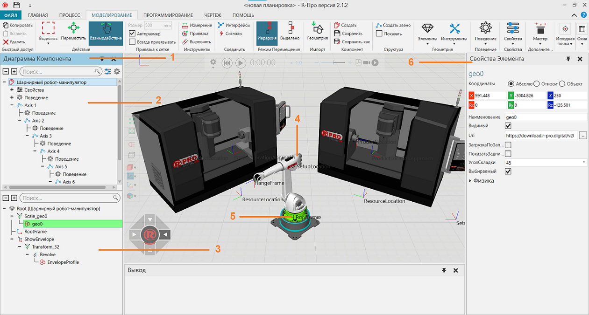

Вкладка Моделирование позволяет моделировать новые и существующие компоненты.

1. |
Панель Диаграмма Компонента |
2. |
Дерево узлов компонента |
3. |
Дерево элементов (геометрии) узла |
4. |
Компонент - Шарнирный робот-манипулятор |
5. |
Выделенный элемент геометрии |
6. |
Панель Свойств |

Доступ
Чтобы получить доступ к Моделированию:
·Щелкните вкладку Моделирование.
Панели
На вкладке Моделирование по умолчанию отображаются следующие панели:
·Диаграмма компонента для просмотра и редактирования структуры данных выбранного компонента. Сама панель состоит из двух панелей. Верхняя панель (Дерево узлов компонента) показывает структуру узла компонента, а также свойства и поведение компонента. Нижняя панель (Дерево элементов узла) показывает структуру элементов выбранного узла в компоненте, которая может включать примитивную геометрию, импортированную геометрию из файлов САD, физические элементы и операции, которые преобразуют другие элементы и управляют ими.
·Свойства для чтения и записи свойств выбранных объектов в компоненте. Это включает в себя узлы, поведение и функции. Свойства компонента — это объекты с собственным набором свойств, перечисленных на панели задач Свойства.
·Вывод, для отображения информационных сообщений.
Контекст
Контекст Моделирования — это моделирование компонентов.
Вы можете:
·Создавайте, редактируйте и связывайте узлы, чтобы сформировать кинематическую цепь суставов.
·Создавайте и подключайте варианты поведения для выполнения и симуляции внутренних и внешних задач и действий.
·Создавайте и управляйте геометрией и топологией САD в элементах. Это включает в себя анализ данных, очистку, перегруппировку и упрощение геометрии в файлах САD для использования в малых, средних и больших планировках.
·Создавайте и ссылайтесь на свойства компонента, чтобы контролировать и ограничивать значение других свойств внутри компонента.
·Используйте математические выражения, чтобы определить свойства и сделать компонент параметрическим.
·Создавайте статические и кинематические объекты, а также объекты для моделирования физики.
·Используйте Python 2.7 и API для реализации сценариев для определения функций компонентов, логики, а также автоматизации задач, действий и обработки событий.
По умолчанию при переходе на вкладку Моделирование на ленте отображаются следующие команды.
Название |
Описание |
|---|---|
Копировать |
Копирует текущий выбор в буфер обмена. |
Вставить |
Добавляет содержимое буфера обмена в активную область или поле рабочей области в зависимости от типа данных. |
Удалить |
Удаляет текущий выбор. |
Выделить |
Позволяет прямо и произвольно выбирать компоненты в трехмерном мире с помощью перечисленных команд. Прямоугольная область Выберите, нарисовав поле выбора. Произвольная область Выберите, нарисовав путь выбора, чтобы сформировать замкнутый контур. Выбрать все Выбирает все компоненты. Инвертировать выделение Формирует новый выбор каждого компонента, не входящего в текущий выбор. |
Переместить (Действия) |
Позволяет перемещать выбранный компонент вдоль оси или плоскости, вращать вокруг оси, привязывать и выравнивать по точке в трехмерном мире. |
Взаимодействие |
Позволяет указателю перемещать соединения и другие интерактивные свойства компонентов с одной или несколькими степенями свободы в трехмерном мире. |
Размер |
Определяет интервал привязки выбранного объекта к оси или плоскости при перемещении. |
Авторазмер |
Включает/выключает автоматический расчет интервалов привязки выбранного компонента по оси или плоскости при использовании перемещения. |
Всегда привязывать |
Включает/выключает автоматическую привязку выбранного компонента вдоль оси или плоскости через определенные промежутки времени при использовании перемещения. |
Измерение |
Измеряет расстояние и/или угол между выбранной геометрией в трехмерном мире. Дополнительные параметры отображаются в области задач. Режим Измерьте расстояние, угол или и то, и другое. Настройки Определите, как визуализировать измерение и в какой системе координат основывать измеренные значения. Тип привязки Определите тип геометрии для выбора в трехмерном мире. |
Привязка (Инструменты) |
Позволяет привязать выбранный компонент к местоположению в трехмерном мире, используя от одной до трех точек. Дополнительные параметры отображаются в области задач. Режим Привязка к одной точке, середине двух точек или центру дуги, состоящей из трех точек. Настройки Влияет на положение, ориентацию или и то, и другое и по какой оси. Тип привязки Определите тип геометрии для выбора в трехмерном мире. |
Выровнять |
Позволяет выровнять точку, ребро, грань компонента относительно выбранной геометрии в 3D мире. Настройки Установить Положение и/или Ориентацию. Предварительный просмотр результата. Тип привязки Определите тип геометрии для выбора в трехмерном мире. |
Интерфейсы |
Позволяет удаленно соединять компоненты в трехмерном мире с помощью абстрактных интерфейсов. Дополнительные параметры отображаются в области задач. Компонент Выберите компонент, который имеет возможность удаленного подключения к другим компонентам. В качестве опций отображаются только компоненты с этой возможностью. Интерфейс Выберите интерфейс в компоненте, используемом для удаленных подключений. Подключения Определить подключения к интерфейсу компонента. Доступное соединение выделено желтым цветом в трехмерном мире, тогда как активное соединение выделено зеленым цветом. В качестве опций отображаются только совместимые интерфейсы. Карта Контекстно-медийной сети Включить/выключить отображение редакторов интерфейса в 3D-мире. Если активно, отображается редактор выбранного компонента, а также редакторы подключенных компонентов. Другие компоненты с совместимыми интерфейсами будут отображать свои редакторы по умолчанию в виде кнопок развертывания. Показать линии подключения Включить/выключить видимость проводов, соединяющих редакторы интерфейса в 3D-мире. Эта опция также доступна в редакторе выбранного компонента. Показать неабстрактные интерфейсы Включить/выключить возможность использования неабстрактных интерфейсов. Как правило, это используется для отображения и редактирования физических подключений. Примечание: По умолчанию редакторы интерфейса (узлы) для компонентов не отображаются, если у них нет двух соответствующих интерфейсов с выбором. Вы можете изменить это, отредактировав «interfacesNodeVisibilityThreshold» в файле app.config. |
Сигналы |
Позволяет соединять сигналы компонентов и входы/выходы робота друг с другом в трехмерном мире. Дополнительные параметры отображаются в области задач. Компонент Выберите компонент с булевыми сигналами. В качестве опций отображаются только компоненты с этой возможностью. Сигнал Сигнал компонента. Если компонент является роботом, входы помечаются как «Вход», а выходы помечаются как «Выход». Вы можете сортировать сигналы по направлению и названию. Вы можете фильтровать сигналы, которые являются входами и выходами, а также сигналы с активным соединением. Подключения Определите подключения к сигналу компонента. Если сигнал находится в другом компоненте, выберите другой компонент, а затем сигнал. Если ввод или вывод осуществляется другим роботом, выберите другого робота, а затем ввод или вывод. Если действие в роботе, выберите выход робота, а затем используйте раздел Конфигурация действий, чтобы определить действие. У вас есть возможность отключить все сигналы в компоненте. Если компонент является роботом, у вас есть возможность отменить все действия, но соблюдайте осторожность, чтобы не удалить предопределенные действия для выходов с 1 по 81. Подсказка: Для входов и выходов робота мы рекомендуем использовать сигналы 100 и выше для новых подключений сигналов и действий. Это помогает избежать конфликта с предопределенными действиями для роботов. Карта Контекстно-медийной сети Включить/выключить отображение редакторов сигналов в 3D-мире. Если активно, отображается редактор выбранного компонента, а также редакторы подключенных компонентов. Другие компоненты с совместимыми сигналами будут отображать свои редакторы по умолчанию в виде кнопок развертывания. Показать линии подключения Включить/выключить видимость проводов, соединяющих редакторы сигналов в 3D-мире. Эта опция также доступна в редакторе выбранного компонента. Включить переключение сигналов Включить/выключить возможность установки значения подключенных сигналов во время симуляции. Щелкните соединитель (круг) сигнала на панели задач или в редакторе в трехмерном мире, чтобы переключить значение. Соединитель зеленый, когда значение равно true. |
Иерархия |
Позволяет перемещать выбранный объект и его иерархию вместе при использовании манипулятора. |
Выделено |
Позволяет перемещать выбранный объект, не относящийся к его иерархии, при использовании манипулятора. |
Геометрия |
Импортирует геометрию поддерживаемого файла. Дополнительные параметры отображаются в области задач. Uri Расположение файла. Структура Особенность : Структура дерева сборки переходит в дерево функций компонента. Узел : Дерево сборки будет сопоставлено с деревом узлов компонента. Компонент: ближайший уровень дерева сборки импортируется как новый компонент. Качество тесселяции Определите уровень детализации для рендеринга геометрии с использованием треугольников. Включить Определите, что включать в геометрию. Правило создания материала Определите правило сопоставления материалов геометрии с материалами в ваших библиотеках материалов. Дерево элементов Определите, какую иерархию использовать для геометрии. Организовать геометрию Определите, как группировать геометрию. Ось вверх Определите ось для выравнивания верхней и нижней части геометрии. Минимальный диаметр отверстия Задайте допуск для удаления отверстий в геометрии. Минимальный диаметр геометрии Определите допуск для отказа от импорта набора геометрии на основе его минимальной ограничивающей рамки. Чувствительность к восстановлению Соедините точки, линии и ребра геометрии в пределах допуска, чтобы исправить ошибки. Единицы измерения Преобразование единиц файла на основе текущей настройки семейства единиц. |
Создать |
Создает новый компонент в трехмерном мире. |
Сохранить |
Сохраняет активный компонент в существующий файл, иначе в новый файл. |
Сохранить как |
Сохраняет активный компонент в новый файл. |
Создать звено |
Создает новое звено в выбранном узле. |
Показать (Структура) |
Включает/выключает визуальную структуру звена активного компонента в 3D-мире, включая смещения суставов и степени свободы. |
Элементы |
Отображает список объектов, которые можно создать в выбранном узле. |
Инструменты |
Отображает список инструментов для редактирования узлов, элементов и геометрии. |
Поведение |
Отображает список вариантов поведения, которые можно создать в выбранном узле. |
Свойства |
Отображает список свойств, которые можно создать в корневом узле активного компонента. |
Мастер |
Отображает список мастеров для выполнения автоматических операций. Скрипт действия Моделирует выбранный компонент для поддержки сигнализации действий с использованием ввода-вывода (I/O). Логика действий сигнала ввода-вывода (I/O) определяется в сценарии Python, помеченном как ActionScript, и может быть настроена в разделе Конфигурация действий, указанном на панели Свойства для выбранного компонента. Конвейер Моделирует выбранный компонент как конвейер для перемещения компонентов по пути. Путь может быть определен существующими элементами рамки или автоматически сгенерирован вдоль верхней грани ограничивающей рамки компонента. Интерфейсы могут создаваться автоматически для поддержки физической передачи компонентов другим компонентам и обратно. В противном случае входные и выходные порты пути могут быть определены поведением существующего типа потока. Другим вариантом является возможность автоматически генерировать Component Creator в начале пути и соединять его выход с входом пути. Конечный инструмент Моделирует выбранный компонент как конечный инструмент (EOAT) или внешнюю ось, которая может быть физически и удаленно подключена к роботам с помощью сигналов и интерфейсов. IO-управление Моделирует соединения выбранного компонента, назначенного контроллеру, для приведения в соответствие с заданным значением с помощью сигнальных событий. Для каждого соединения будут созданы три свойства Real, определяющие его открытое, закрытое и текущее значение. Три логических сигнала будут созданы для запуска и определения значения, к которому соединение должно быть привязано его контроллером. Сигнал, помеченный [Joint_Name]ActionSignal действует как условие запуска для сценария Python, созданного и связанного с контроллером. Когда для сигнала действия звена установлено значение 0 или 1, сценарий уведомит свой парный контроллер о необходимости переместить это соединение в открытое (0) или закрытое (1) значение, например захват и освобождение захватов и зажимов. Можно использовать несколько контроллеров и сценариев для перемещения соединений независимо друг от друга в процессе. Два других сигнала, созданные для соединения, могут указывать, находится ли соединение в открытом или закрытом состоянии. Станок Мастер станков можно использовать для превращения геометрии САD в станок, готовый к моделированию, который будет использоваться с управлением ПЛК или моделированием процессов. Этот мастер автоматически создает необходимые свойства, поведения и элементы. Чтобы использовать этот мастер, вам необходимо иметь компонент, например, геометрическую модель станка, созданную в Рациональном Производстве или импортированную из программного обеспечения САD. Компонент должен иметь как минимум поведение сервоконтроллера и, желательно, структуру звеньев и соединения, настроенные для включения надстройки. Когда звенья настроены, откройте Мастер Станков. Выберите узел или место, где будут размещены обработанные детали. После выбора элементов для добавления к машине создайте необходимые свойства, поведение и функции. Чтобы доработать машину, переместите рамки, такие как расположение продукта и ресурса, в нужные места, и машина готова к тестированию и использованию. |
Привязка (Исходная точка) |
Позволяет привязать исходную точку выбранного компонента к местоположению в трехмерном мире, используя от одной до трех точек. Дополнительные параметры отображаются в области задач. Режим Привязка к одной точке, середине двух точек или центру дуги, состоящей из трех точек. Настройки Влияет на положение, ориентацию или и то, и другое и по какой оси. Тип привязки Определите тип точки для выбора в трехмерном мире. Применить Сохраните новое положение и/или ориентацию начала координат. |
Переместить (Исходная точка) |
Позволяет перемещать исходную точку активного компонента в 3D-мире. Дополнительные параметры отображаются в области задач. Подвердить Сохраните новое положение и ориентацию начала координат. |
Восстановить окна |
Восстанавливает рабочее пространство текущего представления до значения по умолчанию. |
Показать (Окна) |
Отображает список панелей, которые можно показать/скрыть из текущего вида рабочей области. |